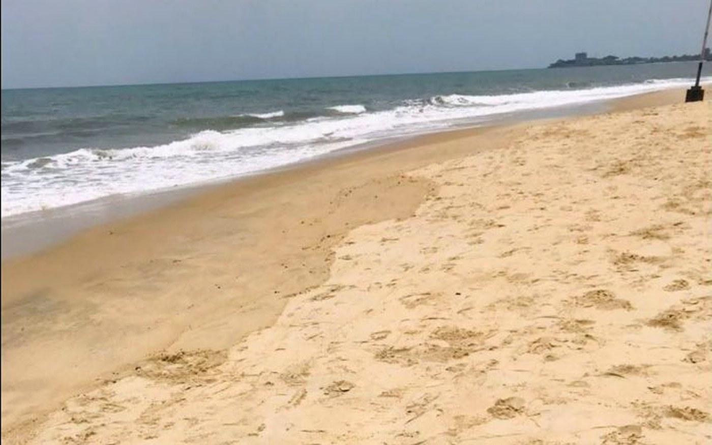

Stories of Sierra Leone in motion.
Original reporting, profiles, places, ideas and carefully labeled material from the Sierra Leone To The Top archive.
Start with the archive.
We are relaunching with material we can document, then expanding into new reporting across all eight pillars.

Lumley Beach: progress you can see.
A visible shoreline result and a simple editorial principle: progress is worth documenting.
Read the story →The 2020 Conversations
An early Sierra Leone To The Top live-video run preserved on the existing YouTube channel.
Explore the archive →Six ways to discover Sierra Leone
A first look across city, conservation, heritage, rainforest, islands and national park.
Read the guide →Five startups. Five different problems to solve.
What READY Salone’s 2026 top-five announcement says about the kinds of problems local founders are tackling.
Read the briefing →Training was only the first step.
Four practical lessons from one reported Learn2Earn employment outcome.
Read the case study →Krio: a language of connection.
From distinctive Freetown history to an everyday bridge across Sierra Leone.
Read the explainer →Across the Atlantic: Bunce Island and the meaning of return.
Gullah Geechee connections, homecoming visits and the role of memory in Sierra Leone’s global story.
Read the feature →How We Move Forward: a five-part test for solutions.
A framework for moving from complaint to evidence, constraints and measurable action.
Read the method →The early video-blog era.
Preserved Facebook posts document Sierra Leone To The Top publishing public video-blog material in July 2017.
Explore 2017 →Kelvin Doe kept building.
From teenage maker to mentor of students experimenting with robotics in Freetown.
Read the profile →What we are building next.
These are coverage areas, not invented stories. Each desk becomes public content only when the reporting is ready.
Meet a Sierra Leonean
Profiles of people building, creating, teaching, leading and solving.
Built in Sierra Leone
Founders, products, makers and enterprises with a real operating story to tell.
Living Culture
Music, food, languages, art, fashion, history and identity.
Across the World
Return stories, expertise, investment, mentoring and global Sierra Leonean networks.
Next Generation
Skills, careers, education, technology and verified opportunities.
How We Move Forward
Constructive explainers that separate problems, evidence, options and action.